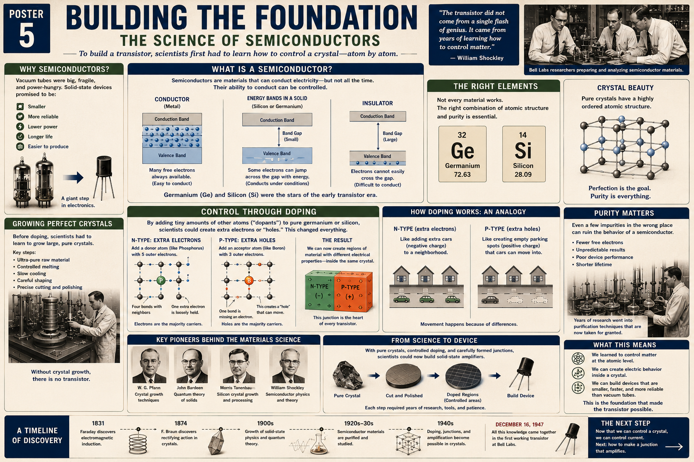

Conductors are always ready
Metals contain many mobile electrons, so they conduct easily. That is useful for wires but not enough for building a controllable switch.
Poster 5 · The Materials Foundation
A lesson for Klins on the science that had to exist before the transistor could become practical: energy bands, pure crystals, controlled impurities, semiconductor junctions, and the ability to shape electrical behavior atom by atom.

Their electrical behavior can be controlled rather than simply accepted.
Metals contain many mobile electrons, so they conduct easily. That is useful for wires but not enough for building a controllable switch.
In insulators, electrons are held too tightly for ordinary voltages to move them through the material.
Their conductivity can be changed by temperature, light, electric fields, and carefully selected impurities.
Electron behavior depends on the allowed energy ranges inside the material.
Electrons can move into nearby available states with little added energy, so current flows readily.
Some electrons can cross from the valence band into the conduction band when given enough energy.
The energy barrier is too large for ordinary conditions, so very few carriers become mobile.
The band gap gives engineers leverage. If it is small enough, carefully introduced carriers can turn conduction on, off, or somewhere in between.
Not every crystal offers useful semiconductor behavior.
Germanium was central to the first successful devices because its carrier behavior could be controlled with the materials and methods available in the 1940s.
Silicon later became dominant because it is abundant, thermally robust, and forms a stable oxide that is extremely useful in manufacturing.
Before engineers could dope a semiconductor, they had to make a crystal worth doping.
Uncontrolled contamination could overwhelm the intended electrical behavior.
Crystal growth required controlled temperature so atoms would arrange into an ordered lattice.
Surface condition affected contacts, fields, leakage, and repeatability.
Dislocations and imperfections could trap carriers or create unpredictable current paths.
Resistivity, carrier type, and crystal quality had to be characterized before device fabrication.
A discovery becomes technology only when useful material can be produced consistently.
Tiny amounts of selected atoms change the number and type of mobile charge carriers.
Donor atoms such as phosphorus contribute an extra electron that can move through the crystal.
Acceptor atoms such as boron create missing-electron positions called holes, which behave like positive charge carriers.
Placing P-type and N-type regions together creates an interface with useful electrical behavior.
Semiconductor engineering depends on adding the right impurity in the right amount. The same material can become electrically different without changing its basic crystal lattice.
The wrong impurity could destroy the intended carrier behavior.
Unwanted impurities could make the material conduct too strongly and reduce control.
Different pieces of crystal could behave differently even when the device geometry was the same.
Defects and contamination could create unwanted current paths, instability, and early failure.
Each transistor begins as a materials-processing sequence.
Produce semiconductor material with controlled composition.
Prepare surfaces and geometry for fabrication.
Form areas with different carrier types and concentrations.
Connect the active material to the outside circuit and protect it mechanically.
The transistor depended on a larger community than the three names usually remembered.
Advanced crystal purification and zone-refining methods that made semiconductor materials far more controllable.
Contributed deep theoretical understanding of solids, surfaces, and carrier behavior.
Helped advance silicon crystal growth and processing during the move beyond early germanium devices.
Developed semiconductor device theory and pushed the transition toward junction transistors.
Your components are manufactured examples of controlled crystal behavior.
The emitter, base, and collector are differently doped semiconductor regions arranged to control carrier flow.
LEDs, flyback diodes, and rectifiers all rely on P-N junction behavior.
The processor contains billions of transistor structures fabricated through repeated doping, deposition, patterning, and etching.
Temperature, motion, light, and inertial sensors all depend on engineered semiconductor regions and microfabricated structures.
Leakage, heat, voltage rating, current capacity, and switching speed all begin with device physics and materials.
Parameters such as gain, threshold voltage, saturation voltage, and maximum temperature are the practical expression of semiconductor structure.
The transistor became possible only after decades of materials and physics research.
Electrical science begins revealing deep relationships between fields, motion, and matter.
Solid materials are shown to conduct differently depending on direction and contact conditions.
Quantum theory and atomic models begin explaining electron behavior in solids.
Purification, crystal study, and detector work make semiconductor behavior more useful and measurable.
Researchers gain enough control over impurities and crystal regions to create purposeful electrical behavior.
Materials, theory, measurement, and experiment come together in the first working transistor.
The transistor was possible because scientists learned to control matter at the atomic level. Once crystal structure, purity, and doping could be controlled, electrical behavior became something engineers could design rather than merely observe.